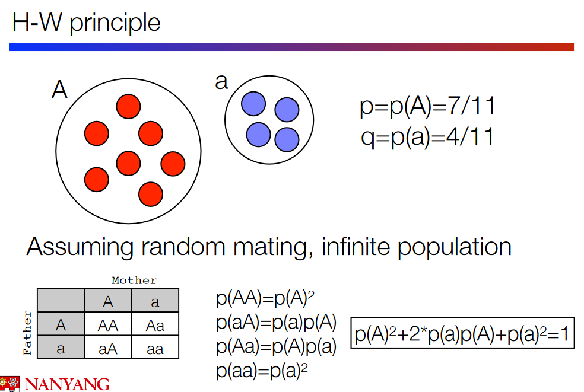
9 SNPs, Structural Variations, and Pan-Genomes
9.1 Background Information
9.1.1 Hardy-Weinberg Equilibrium
The Hardy-Weinberg principle, established in 1908, helps us understand genotype frequencies in a population under specific conditions. Imagine a population where individuals choose mates randomly, there’s an infinite number of individuals, no genetic mutations occur, there’s no migration in or out, and there’s no natural selection favoring specific traits.
Let \(p(A)\) be the probability of genotype \(aa\) happening, \(p(AA)\) the probabilty of genotype \(AA\) happening, and \(p(Aa)\) and \(p(aA)\) the probability of genotype of \(Aa\) happening. We can say the following given the above information (i.e., something similar to the quadratic formula):
\[\begin{equation} p(A)^2 + 2p(Aa) + p(a)^2 = 1 \end{equation}\]
In this equilibrium, there are two alleles, let’s call them A and a, and their frequencies are represented by the symbols p and q. The key relationship is that p + q always equals 1. Furthermore, the frequencies of the possible genotypes, which are AA, Aa, and aa in a diploid organism, are represented by the equations p², 2pq, and q² respectively.
To break it down further, p and q are like the percentages of the major (A) and minor (a) alleles in the population. The possible genotypes are combinations of these alleles: AA means having two copies of the major allele, Aa means having one copy of each, and aa means having two copies of the minor allele.
In an ideal situation where the Hardy-Weinberg equilibrium holds, the expected frequencies of these genotypes can be calculated using the equations mentioned earlier. If the observed frequencies in a real population do not match these expected frequencies, it suggests that the conditions assumed by the Hardy-Weinberg equilibrium are not being met. This discrepancy can indicate factors such as non-random mating, a finite population size, mutation, migration, or natural selection affecting the gene pool.
9.2 Main Processes of Evolution
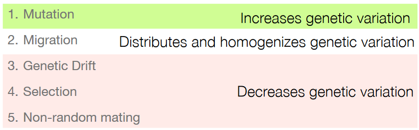
9.2.1 Mutations
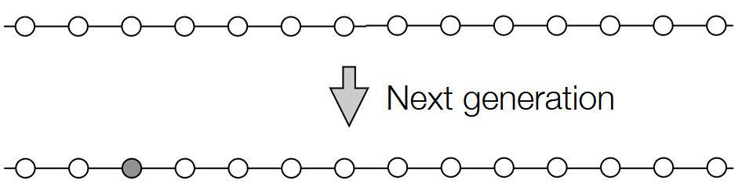
Genomic mutations, or changes in our genetic material, are a common and ongoing process. These mutations can arise from various sources, including errors that happen during the replication of DNA, exposure to radiation, and interactions with certain chemical compounds. When we have mutations, these mutations are passed down to our offspring (should we have any).
One common type of mutation is known as a single nucleotide polymorphism, or SNP. These mutations involve the replacement of a single building block, or nucleotide, in the DNA sequence. SNPs are significant because they represent a single change in the genetic code and can contribute to the natural variation observed among individuals.
In essence, our DNA is dynamic, and changes can occur due to a variety of factors. These mutations, especially SNPs, play a role in shaping the diversity seen within populations and contribute to the genetic differences among individuals.
9.2.1.1 Molecular Clock Hypothesis
The Molecular Clock Hypothesis, proposed by Zuckerkandl and Pauling in 1962, suggests a fascinating concept in evolutionary biology. They observed that the number of amino acid differences in a protein called hemoglobin between different lineages changes in a roughly linear manner with time, as estimated from fossil evidence.
To make this hypothesis work, they assumed that the number of mutations occurring per unit of time and per base pair (the building blocks of DNA) remains steady via the formula: \[\displaystyle \frac{\text{Number of Mutations}}{\text{Base Pairs} \times \text{Number of Years}}\]In other words, they suggested a constant rate of change, like a ticking clock, where the number of mutations happening per base pair per year stays roughly the same.
Because of the above, the genome in question is also assumed to evolve over time.
9.2.1.2 Mutation Rate
The mutation rate is a measure of how many genetic changes, or mutations, occur on average per year or per generation. Scientists use two main methods to estimate this rate.
One way is through direct estimation, where researchers sequence the DNA of parents and their offspring, forming what’s called parent-child trios. By comparing the genetic makeup of parents and children, they can calculate the average number of mutations that accumulate over a certain period, either per year or per generation.
The second method is indirect estimation. Scientists compare the nucleotide differences between the genomes of two species and then scale this information using fossil evidence that indicates the time since these species diverged. This approach yields two different rates: the number of mutations per base pair per generation, directly estimated from parent-child trios, and the number of mutations per base pair per generation, indirectly estimated from fossil evidence.
However, it’s crucial to note that these rates are meaningful only when they are comparable. To achieve this, scientists need to account for the generation time, which is the time it takes for one generation to replace the next. This adjustment ensures that both rates are on the same scale and can be accurately compared, allowing researchers to better understand and interpret mutation rates across different species or populations.
9.2.1.3 Generation Time
Generation time refers to the average duration between successive generations within a population. It encompasses the period from infancy to the point when an individual becomes capable of producing offspring. This concept assumes a constant duration over extended periods and is averaged across the entire population.
Estimating generation time can be challenging, even for humans. In our species, males can father children between the ages of approximately 14 to 100 years, while females can bear offspring from around 14 to 50 years. The variability in reproductive ages adds complexity to determining an exact average for the generation time.
For plants, the situation is even more intricate. Plants can produce seeds at any age after reaching maturity. However, not all seedlings survive to reach the age of sexual reproduction. Interestingly, older plants often produce more seeds. Moreover, many ecosystems maintain a seed bank in the soil, which means seeds can persist in a dormant state, potentially leading to the growth of new plants in the future.
9.2.1.4 Site Frequency Spectrums
SNPs can be examined by considering how many individuals share the same allele. If a particular allele is found in only one individual, it suggests a very recent mutation. On the other hand, if an allele is widespread and present in many individuals, it indicates that the mutation has existed in the population for a longer period, allowing several individuals to inherit it.
When all individuals in a population share the same allele, it is described as “fixed.” This implies that the mutation has become a permanent part of the population’s genetic makeup.
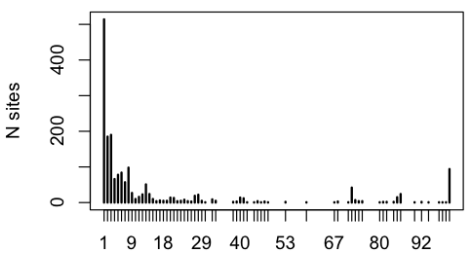
Scientists use a tool called a site frequency spectrum, which is essentially a histogram. This histogram illustrates how common different SNPs are in a population. By examining this spectrum, researchers can gain insights into the distribution of genetic variations within a population and understand the history and dynamics of mutations over time. It provides a visual representation of the frequencies of different alleles, helping researchers explore the genetic diversity and evolution of a population.
9.2.1.5 Site Frequency and Genealogy Trees
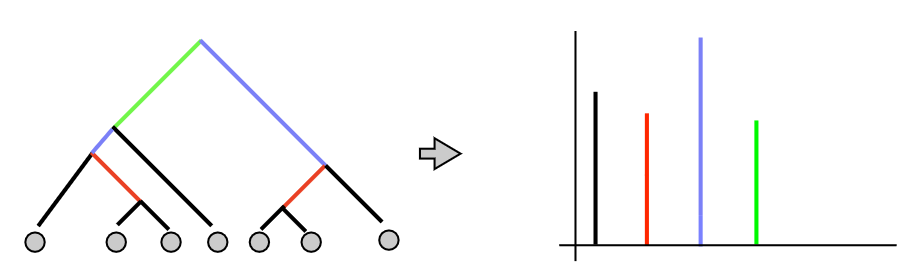
A genealogy tree represents the ancestral relationships among a set of genes in a population. There is a direct mapping between a gene tree and a probability distribution, meaning that a specific genealogy tree corresponds to a particular probability of observing certain genetic variants in the population.
However, it’s important to note that the mapping doesn’t work in reverse. This means that there can be multiple possible genealogy trees that lead to the same site frequency spectrum. In other words, different ancestral histories can result in the same distribution of genetic variants among individuals in a population.
Despite this limitation, the site frequency spectrum still serves as a valuable tool for describing the population’s history. It provides insights into how common different genetic variants are in a population and helps researchers understand the dynamics of population size changes, migration events, and other factors that shape genetic diversity over time. While there may be multiple genealogy trees that can lead to the same site frequency spectrum, the spectrum remains a useful summary of the genetic variation within a population.
9.2.2 Drift
Random drift refers to the changes in populations that occur as a result of random events. These events can have a significant impact on the genetic makeup of a population over time.
One instance of random drift is founder effects, which happen when a small group of individuals establishes a new population in a different area. The genetic characteristics of this small founding group can disproportionately influence the traits of the entire population, leading to a distinct genetic profile.
Population size can also vary due to changes in environmental conditions. Fluctuations in population size can result in random changes in the prevalence of certain genetic traits. This is because smaller populations are more susceptible to the effects of chance.
Migration, or the movement of individuals between populations, is another factor contributing to random drift. When individuals migrate, they bring their genetic material with them, potentially influencing the genetic diversity of both the source and destination populations.
9.2.2.1 Neutral Theory of Evolution
The neutral theory of evolution, proposed by Motoo Kimura in 1968, suggests that a significant portion of the genetic variation within and between species arises from the random genetic drift of mutant alleles that are selectively neutral. In other words, these mutations don’t confer a survival advantage or disadvantage to individuals carrying them.
According to this theory, deleterious mutations, or those that are harmful to an organism’s survival, are quickly eliminated by natural selection. On the other hand, mutations that are neither harmful nor beneficial (neutral mutations) are more likely to persist over time.
Given that a large portion of the genome is non-coding, meaning it does not directly contribute to the formation of proteins, most mutations occur in non-coding regions and are therefore neutral. Beneficial mutations, if they occur, have a higher likelihood of becoming fixed in a population rapidly, meaning that eventually, all individuals within that population will carry the beneficial mutation.
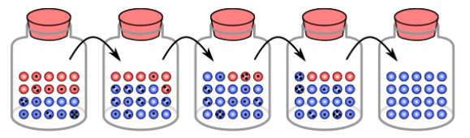
Genetic drift, a process influenced by chance rather than selection, plays a crucial role in this theory. A mutant allele can arise within a population and reach fixation (meaning all individuals in the population have that allele) due to random chance, rather than being driven by a selective advantage.
Furthermore, the probability of a mutant allele reaching fixation is higher in smaller populations. This is because, in smaller populations, genetic drift has a more pronounced effect, influencing the frequency of alleles regardless of their selective advantage.
9.2.2.2 Population Bottleneck
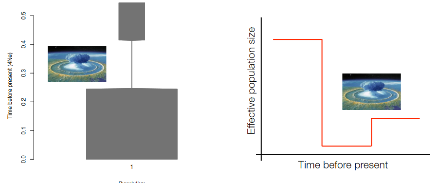
9.2.2.3 Founder Effect
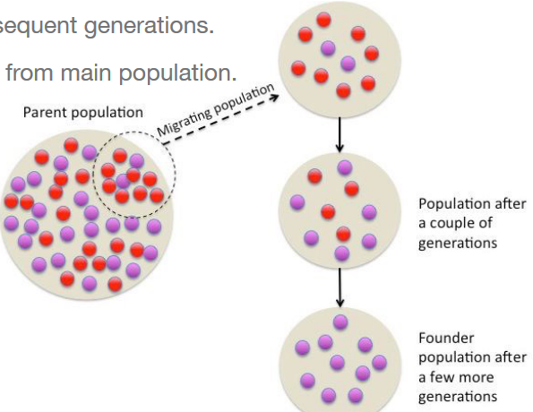
The founder effect is a specific type of population bottleneck that occurs when a small group of individuals, known as founders, establishes a new colony or population. This small founding group carries only a subset of the genetic diversity present in the larger original population.
As these founders reproduce and their descendants continue to interbreed within the new colony, there is a tendency for heavy inbreeding. Inbreeding involves mating between close relatives and can result in a reduction in genetic diversity.
The consequence of the founder effect is that the allele frequencies in the new population can differ significantly from those in the larger original population. Certain alleles may become more prevalent in the new population simply because they were present in the small group of founders.
Due to the limited genetic diversity introduced by the founders, subsequent generations may experience reduced overall genetic diversity. This reduction can make the new population more susceptible to genetic disorders and less adaptable to changing environmental conditions.
9.2.3 Selection
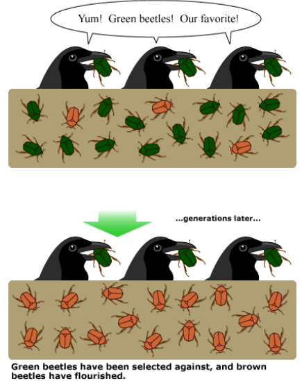
In real-life populations, mate selection is not a random process. Instead, individuals with certain beneficial traits tend to have higher fitness, meaning they have a greater probability of producing more offspring that survive to reproductive age.
The concept of fitness in this context refers to the reproductive success of an individual, determined by the likelihood of passing on its genes to the next generation. Individuals with advantageous traits, whether in terms of survival, reproduction, or other factors, are more likely to contribute their genes to subsequent generations.
As a result, the genotypes represented by individuals with higher fitness become more prevalent in the population over time. Through natural selection, which favors traits that enhance an organism’s ability to survive and reproduce, these beneficial traits can increase in frequency within the population.
Over many generations, the frequency of these advantageous traits may reach a point where they become fixed in the population, meaning that all individuals in the population carry those traits.
9.2.3.1 At a Genetic Level?
Selection at the genome level leaves discernible patterns in the sequence of an organism’s genetic material. When new mutations arise that confer a benefit, natural selection can lead to the rapid fixation of these advantageous alleles in the population. This occurs because individuals carrying these beneficial traits tend to have higher fitness, producing more offspring and increasing the frequency of the advantageous alleles in subsequent generations.
It’s important to note that similar patterns can also be produced by genetic drift, which includes events like population bottlenecks or founder effects. In genetic drift, certain individuals or genotypes survive and become more prevalent in the population purely by chance, rather than due to any selective advantage.
9.2.3.2 Kinds of Selection
Different types of selection play pivotal roles in influencing the genetic diversity and composition of populations. Purifying or negative selection acts as a quality control mechanism, selectively removing new alleles that are deleterious or harmful to an organism’s fitness. This stabilizing selection ensures the preservation of a population’s overall well-adapted genetic makeup by eliminating mutations that could compromise fitness.
On the contrary, balancing selection introduces a dynamic element by allowing alternative alleles to persist at higher frequencies than expected from genetic drift alone. This phenomenon often arises when heterozygotes, individuals with two different alleles for a specific gene, exhibit a higher fitness than homozygotes. Balancing selection contributes to the maintenance of genetic diversity within a population, showcasing the importance of heterogeneity in certain genetic traits.
Directional or positive selection propels evolutionary change by favoring a specific phenotype or allele state. This type of selection can be driven by environmental changes or adaptations that provide a selective advantage. Over time, the allele associated with the favored trait experiences an increase in frequency within the population, reflecting the dynamic nature of evolutionary forces.
9.2.3.3 Genomic Hitchhiking
Genomic hitchhiking is a phenomenon observed in the context of genetic evolution, particularly when examining the site frequency spectrum. In the examples discussed earlier, alleles beyond the initial 1:10 ratio were found to reach fixation. This occurrence stems from individuals, and their descendants, who experienced increased fitness due to beneficial mutations. In simpler terms, genomic hitchhiking is when an allele reaches fixation along with the advantageous alleles by chance.
However, not all alleles reaching fixation necessarily contribute to the fitness increase. Some alleles may reach fixation purely by chance, a process known as genetic drift. This incidental fixation of alleles due to chance rather than selection is what defines genomic hitchhiking.
It’s important to note that in reality, genomic hitchhiking is constrained to alleles in close proximity to the beneficial mutation. This limitation arises from the process of recombination, where genetic material is exchanged during the formation of reproductive cells. Recombination tends to break up the associations between nearby alleles, preventing distant alleles from hitchhiking along with the beneficial mutation.
9.2.4 Migration
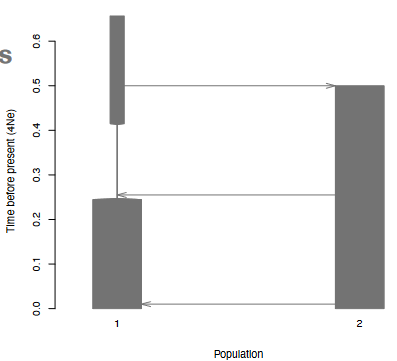
Migration, in the context of population genetics, refers to the movement of individuals between populations, leading to the exchange of genetic material. While a founder event, such as the establishment of a new colony by a small group of individuals, is one form of migration, the term migration more broadly encompasses the continuous gene flow between distinct populations.
Populations can evolve independently over time, and the frequencies of alleles may undergo different trajectories. Migration becomes a crucial factor in maintaining genetic diversity and influencing the genetic makeup of populations. When individuals migrate from one population to another, they bring with them the genetic diversity present in their source population.
This influx of new genetic material can have significant consequences for the target population. It introduces novel alleles and variations, potentially altering the allele frequencies and genetic characteristics of the population. Migration acts as a dynamic force that connects populations, preventing them from becoming genetically isolated and contributing to the ongoing evolution of species.
9.3 Coalescent Theory
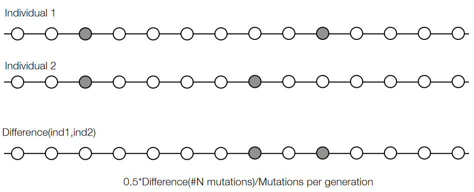
The concept of coalescence is a key idea in population genetics, particularly when studying the relationships among individual genomes. When mutations occur at a constant rate, analyzing the observed SNPs between two genomes can provide insights into the time to their most recent common ancestor.
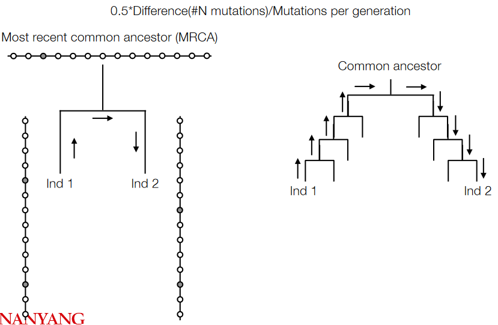
This approach assumes a constant mutation rate, allowing researchers to make inferences about the historical relationships between individuals or populations based on the observed genetic variations.
Coalescent theory is a model in population genetics that provides insights into the shared ancestry of gene variants sampled from a population. Unlike traditional evolutionary models that look forward in time, coalescent theory reverses the perspective and examines the process of merging alleles backward in time. This model traces the genetic history of a population by simulating coalescence events, where alleles merge into a single ancestral copy.
In this theoretical framework, a coalescent event represents the common ancestry of gene variants. The model simulates a random process, allowing researchers to reconstruct the historical relationships between alleles in a population. By studying coalescent events, scientists can estimate the time, measured in generations, since gene variants shared a common ancestor.
9.3.1 Bottlenecks and Coalescence
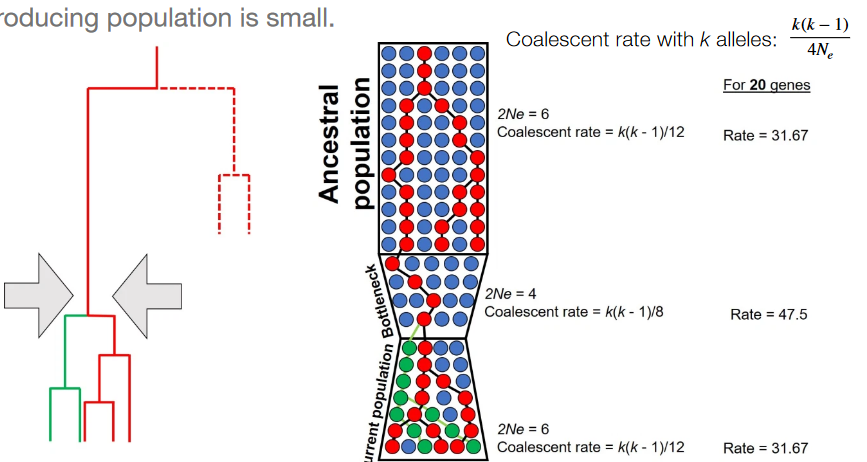
A bottleneck occurs when a population undergoes a significant reduction in size, often due to environmental factors or other events. During a bottleneck, the number of individuals contributing to the next generation is small, and this has implications for coalescence events.
In the case of bottlenecks, where the population size is dramatically reduced, there are fewer potential ancestors for the next generation. This means that individuals from the bottlenecked population are more likely to share recent common ancestors compared to a non-bottlenecked population.
9.3.2 Structural Variants
The advent of genome sequencing has revealed that genetic variation between individuals is not solely driven by point mutations (Single Nucleotide Polymorphisms or SNPs). Structural variants represent another layer of genomic diversity, involving changes larger than 1 kilobase (kb) in the genome.
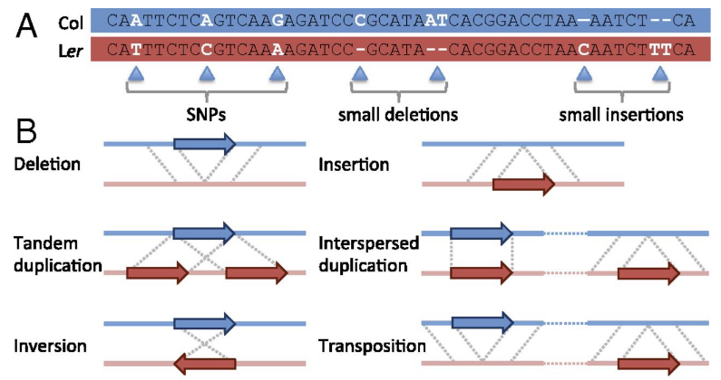
Structural variants encompass various alterations, including insertions, deletions, duplications, and inversions. These modifications can significantly impact the genetic landscape and contribute to the diversity observed among individuals.
Several mechanisms underlie the generation of structural variants. Errors during DNA replication, where inaccuracies occur in copying genetic information, can result in structural changes. Transposable elements, which are sequences of DNA capable of moving around the genome, can also induce structural variation by inserting or removing segments of genetic material. Additionally, double-strand breaks in the DNA, often caused by external factors or internal cellular processes, can lead to structural changes when the breaks are repaired.
9.4 Pan-Genomes
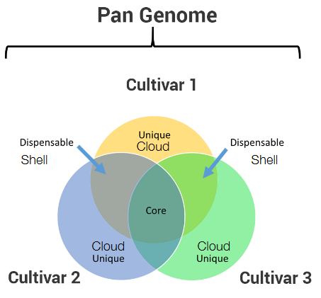
The pan-genome framework categorizes the genetic makeup of a species into three distinct components. First, the core genome encompasses genetic elements that are shared universally among all individuals within a species. These core components define the fundamental traits and characteristics that are common to the entire population, forming the genetic foundation of the species.
In addition to the core genome, the dispensable genome, often referred to as the cloud, comprises genetic elements shared by at least two individuals but not present universally across the entire population. These dispensable elements contribute to the diversity observed within the species, allowing for variability in genetic content among individuals.
Lastly, the unique genome, known as the shell, consists of genetic elements specific to and present in only one individual. These unique elements contribute to individual variability and distinctiveness within the population, highlighting the personalized nature of certain genetic traits.